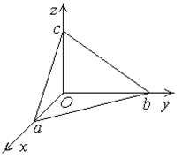

5.2.3. Уравнение
плоскости «в отрезках»
Пусть плоскость не проходит через начало координат.
Преобразуем общее уравнение плоскости:
, ,
.

Уравнение
Уравнение
плоскости в отрезках
называется
уравнением плоскости «в отрезках».
Параметры представляют
собой координаты точек пересечения плоскости с координатными осями и равны (с
точностью до знака) отрезкам, отсекаемым плоскостью на координатных осях.
Пусть, например, точка лежит на оси  и в плоскости , т.е.
и в плоскости , т.е.
и в плоскости , т.е..
Тогда , откуда .
Какие отрезки отсекает на осях координат плоскость ?
Приведем общее уравнение плоскости к виду уравнения «в отрезках»:
.
Отрезки, отсекаемые на осях, равны , , . Отрицательный
знак перед  показывает, что плоскость пересекает
отрицательную полуось
показывает, что плоскость пересекает
отрицательную полуось  .
.
показывает, что плоскость пересекает
отрицательную полуось .